Introduction to R in IDEAS Studio
The R module is designed for executing R scripts, being able to access the data files located into the Project folder, and show the plots generated.
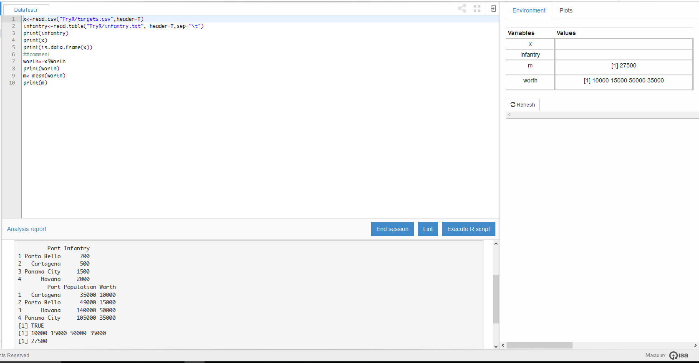To create a new R file from scratch go to:
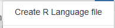now the R code is ready to be written into de editor frame
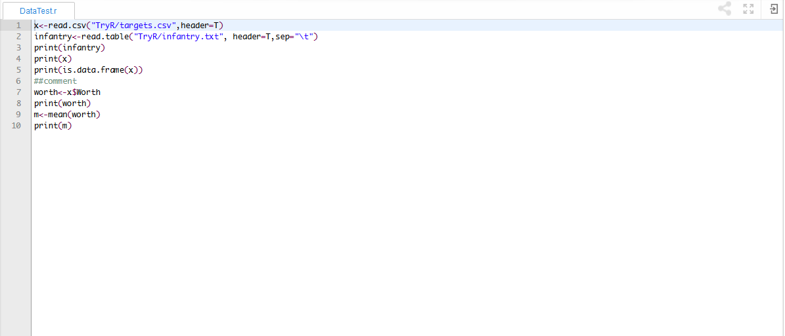R files can be uploaded aswell, just select the option:
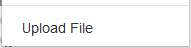Scripts execution
When the script is ready to be executed, click the "Execute Script" button
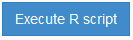The output will be showed in the console frame:
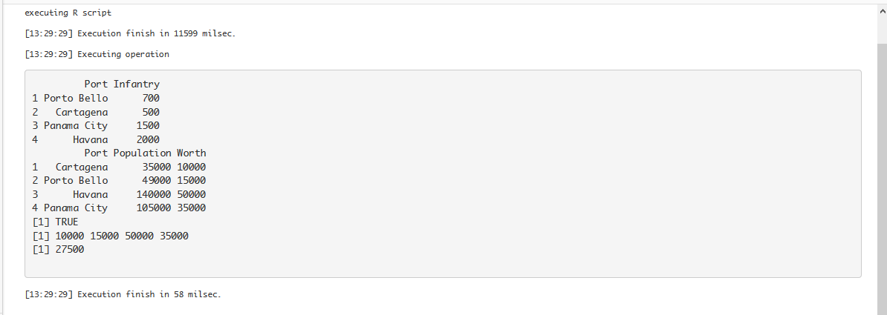Please have in count that is necessary to have an output command (print()) to have something showed in the console.
The execution is made as if the working directory of R were in the Project folder, so the paths used to access data saved in other files don't require the inclusion of the Project name.
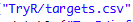Ending the session
If you need a clean up of the environment, or the execution is hanged whatever the reason is, just click in the "End Session" button:
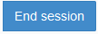this will make the current session (and the environment variables values) to go away, but not the plots.
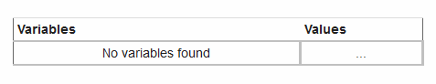Plots are still in their folder, but to see them it's necessary to execute a script again (to have a new session alive).
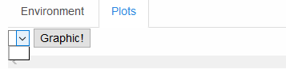Checking the sytax
If you want IDEAS Studio to tell you possible mistakes made in the code, click the "Lint" button
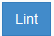There will appear error markers at the corresponding lines.
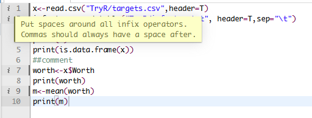The console also informs of the linting result:
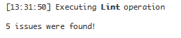The environment variables
After execute a script you can click the inspector expand button to see the values of the variables
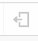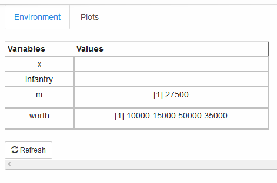
Clicking a variable will expand the corresponding row of the table to fully show the value of the variable if not already showed.
Please click in the "Plots" Tab to see the plots generated by the execution.
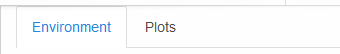The Graphics
After executing a script that produces plots and graphics, all those plots are saved as .jpg files in a folder called "IDEAS-R-OutputFolder" so you have fully availability of the plots.
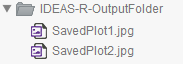But IDEAS Studio also has a visor for those images, available in the Plot Tab of the editor frame
Select the plot you'd like to see and click the "Graphic!" button (it may be necessary to click twice).
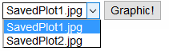